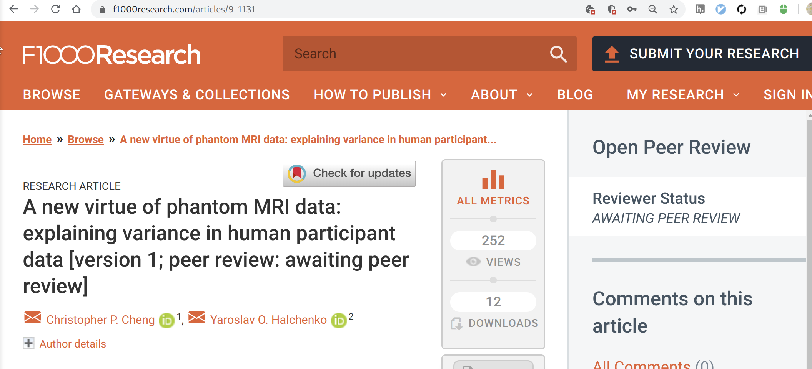

Use of MRI QC metrics, scanning parameters and seasonal variation data to control for variance in MRI studies
Yaroslav O. Halchenko
 @yarikoptic
@yarikoptic |
Christopher P. Cheng
@chrispcheng |
|
Center for Open Neuroscience
Department of Psychological and Brain Sciences Center for Cognitive Neuroscience Dartmouth College |
ReproNim center: https://repronim.org
Acknowledgements
|
Funders


|
Study: Nuisance
 Cheng CP and Halchenko YO. A new virtue of phantom MRI data: explaining variance in human participant data [version 1; peer review: awaiting peer review]. F1000Research 2020, 9:1131 (https://doi.org/10.12688/f1000research.24544.1)Further Information
- Data/code:
- DataLad: datalad.org
- ReproNim: repronim.org
Slides: https://github.com/proj-nuisance/TODO/